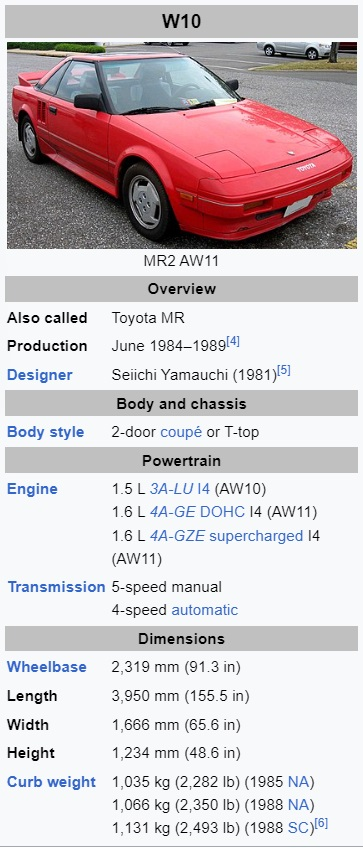

The Toyota MR2 is a line of two-seater, mid-engined, rear-wheel-drive sports cars, manufactured in Japan and marketed
globally by Toyota from 1984 until 2007 over three generations: W10 (1984-1989), W20 (1989-1999) and W30 (1999-2007).
It is Japan's first rear mid-engined production car.
General Description
Conceived as a small, economical and sporty car, the MR2 uses simple but effective design elements, including an
inline-four engine, transversely mounted in front of the rear axle, four-wheel disc brakes, and fully independent
coilover suspension - MacPherson strut fronts and Chapman strut rears.The name MR2 stands for either "mid-ship
run-about 2-seater" or "mid-engine, rear-wheel-drive, 2-seater".
First Generation(W10; 1984-1989)
Toyota introduced the first-generation MR2 in 1984, designating it the model code "W10". When fitted with the 1.5-liter
3A engine, it was known as the "AW10". Likewise, the 1.6-liter 4A version is identified by the "AW11" code.
As Toyota engineered the MR2 to accommodate a 2-liter engine,[7] its primary features included its light body (as low as
950 kg (2,094 lb) in Japan and 1,066 kg (2,350 lb) in the US), strong handling, and low-power small-displacement
engine. The car is often referred to as the AW11, referring to the chassis code of the most common 1.6-liter, A-engined
versions.
The MR2's suspension and handling were designed by Toyota with the help of Lotus engineer Roger Becker.Toyota's active
suspension technology, called TEMS, was not installed. With five structural bulkheads, the MR2 was quite heavy for a
two-seater of its size.
Toyota employed the naturally aspirated 4A-GE 1,587 cc (1.6 L; 96.8 cu in) inline-four engine, a DOHC four-valve-per-cylinder
motor, borrowed from the E80 series Corolla.[10] This engine was also equipped with Denso electronic port fuel injection
and T-VIS variable intake geometry, giving the engine a maximum power output of 112 hp (84 kW) in the US, 128 hp (95 kW)
in the UK, 116 or 124 PS (85 or 91 kW; 114 or 122 hp) in Europe (with or without catalytic converter), 118 hp (88 kW)
in Australia and 130 PS (96 kW; 128 hp) in Japan. Japanese models were later detuned to 120 PS (88 kW; 118 hp). A five-speed
manual transmission was standard, with a four-speed automatic available as an option.
Second generation (W20; 1989-1999)
The MR2 went through a redesign in 1989 (though North America did not receive them until early 1990 as 1991 models). The
new car was larger, weighed 350 to 400 lb (159 to 181 kg) more than its predecessor due to having a more luxurious and
spacious cabin, larger engine sizes, sturdier transaxle, and a more durable suspension setup. The overall design of the
automobile received more rounded, streamlined styling, with some calling the MR2 SW20 a "baby Ferrari" or "poor man's Ferrari"
due to design cues similar to the Ferrari 308 GTB/GTS or Ferrari 348.
Like the AW11 before it, Toyota spent countless hours fine-tuning the handling capabilities of the SW20, seeking advice from
professional race car drivers, including Dan Gurney of Formula One, NASCAR, and Le Mans fame.
Differences between the normally aspirated and turbocharged models include the "Turbo" emblem (US) on the rear trunk, 'TWIN CAM 16 TURBO'
decal above the side intake (Japanese market), a fiberglass engine lid with raised vents, fog lights, and an added interior center storage
compartment located between the two seats. All SW20 MR2s came with a staggered wheel setup, with wider wheels and tires in the rear than in the front.
Mechanical differences on the Turbo models include:
3S-GTE engine with associated air-to-air intercooler and different exhaust configuration
Stronger and heavier E153 gearbox with different ratios and stronger axles;
Larger fuel pump and radiator.
Models with 3S-GE and 3S-GTE engines had twin-piston front brake calipers. Models with the 5S-FE engine had only single-piston calipers.
Third generation (W30; 1999-2007)
The third-generation MR2 was marketed as the Toyota MR-S in Japan, Toyota MR2 Spyder in the US and Australia, and the Toyota MR2 Roadster in Europe,
except for France and Belgium, where it was marketed as the Toyota MR Roadster.
Also known as the Midship Runabout-Sports, the newest MR2 took a different approach than its predecessor, most obviously becoming a convertible and
receiving the 'Spyder' marketing nomenclature.
The first prototype of MR-S appeared in 1997 at the Tokyo Motor Show. The MR2 Spyder chief engineer Harunori Shiratori said, "First, we wanted true
driver enjoyment, blending good movement, low inertia, and lightweight. Then, a long wheelbase to achieve high stability and fresh new styling; a
mid-engine design to create excellent handling and steering without the weight of the engine upfront; a body structure as simple as possible to allow
for easy customizing, and low cost to the consumer."
The only engine available for the ZZW30 was the all-aluminum alloy 1ZZ-FED, a 1.8 L (1,794 cc) inline-four engine. Like its predecessors, it used DOHC
and 4 valves per cylinder. The intake camshaft timing was adjustable via the VVT-i system, which was introduced earlier on the 1998 MR2 in some markets.
Unlike its predecessors, however, the engine was placed onto the car the other way round, with the exhaust manifold towards the rear of the car instead
of towards the front. The maximum power of 138 bhp (140 PS; 103 kW) at 6,400 rpm and 126 lb⋅ft (171 N⋅m) of torque at 4,400 rpm[48] was quite a drop from
the previous generation, but thanks to the lightness of the car it could still move quite quickly, accelerating from 0 to 100 km/h (62 mph) in 6.8 to 8.7
seconds depending on the transmission option, the SMT being unable to launch and shift as quickly as the conventional manual transmission.[51] Curb weight
is 996 kg (2,195 lb) for manual transmission models.
In addition to the 5-speed manual transmission, a 6-speed manual and 5-speed SMT were made available starting in 2002. A form of automated manual transmission,
the SMT has no conventional H-pattern shift lever nor clutch pedal. The driver shifts gears by tapping the shift lever forward or backward or by pressing
steering-wheel-mounted buttons. Clutch engagement is automated, and the system modulates the throttle on downshifts, matching engine speed to transmission
speed seamlessly. The system prioritizes clutch life over shift speed, hence shifts and launches are slower and gentler than those a human driver can perform
using a conventional manual transmission, hindering rapid acceleration somewhat. Unlike similar systems offered in contemporary sports cars, the SMT lacks a fully
automated mode emulating an automatic transmission.
Specifications for The Three Generations

Curiosities
In French-speaking markets, the vehicle was renamed Toyota MR because the abbreviation "MR2" sounds like the
profanity "merde" when spoken in French.
Design work began in 1979 when Akio Yoshida from Toyota's testing department started to evaluate alternatives
for engine placement and drive method, finalizing a mid-transverse engine placement. Toyota called the 1981
prototype SA-X.
All three generations were in compliance with Japanese government regulations concerning exterior dimensions
and engine displacement.
The MR2 appeared around the same time as the Honda CR-X and the Nissan EXA from Japan, the Pontiac Fiero and Ford
EXP from North America, and about a decade after the VW Scirocco and Fiat X1/9 from Europe made their debut.
Toyota debuted its SV-3 concept car in October 1983 at the Tokyo Motor Show, gathering press and audience
publicity. The car was scheduled for a Japanese launch in the second quarter of 1984 under the name MR2.